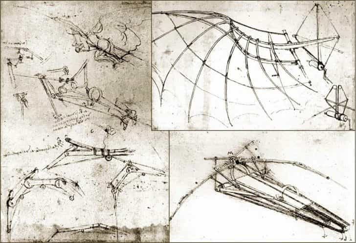
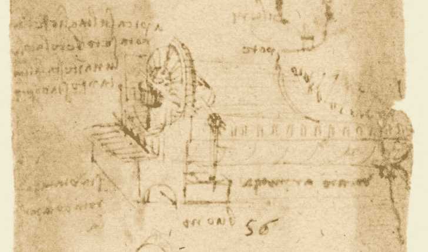

Learning is the only thing the mind
never exhausts, never fears, and never regrets.
Galery




Learning is the only thing the mind
never exhausts, never fears, and never regrets.
I have been impressed with the urgency of doing.Knowing is not enough;
we must apply. Being willing is not enough. We must do.